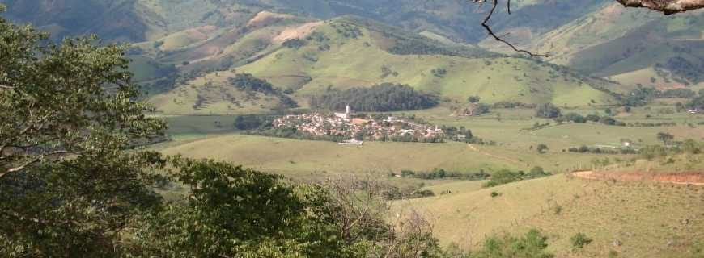

POR QUE É TÃO DIFÍCIL FALAR SOBRE SI PRÓPRIO? SERÁ QUE TEMOS RECEIO DE DIZER ALGO DIFERENTE DO QUE AS OUTRAS PESSOAS PERCEBEM DE NÓS? OU NÃO QUEREMOS PARECER PRESUNÇOSOS OU NEM MUITO CARETAS? OU QUEM SABE A DIFICULDADE ESTARIA EM TENTAR FALAR TUDO QUE NOS É RELEVANTE EM UM ESPAÇO PEQUENO? NÃO SEI MESMO, POR ISSO RESOLVI ATÉ DEIXAR ESSA PARTE PARA O FINAL HAHA.
EM LINHAS GERAIS, ME CHAMO GABRIEL, TENHO 23 ANOS E SOU FORMADO EM FÍSICA LICENCIATURA PELA UNIFEI. MORO NO CENTRO DA CIDADE DE BRAZÓPOLIS DESDE 2016, MOMENTO NO QUAL PRECISEI ME MUDAR DA CASA DOS MEUS PAIS PARA PODER ESTUDAR. EU CRESCI NA ZONA RURAL DE BRAZÓPOLIS, EM UM LUGAREJO CHAMADO LUMINOSA.
ESSE BAIRRO FAZ FRONTEIRA COM AS CIDADES DE CAMPOS DO JORDÃO, SÃO BENTO, PIRANGUÇU... APESAR DE FICAR MEIO QUE CERCADA POR MATO. É UM LUGAR BEM TRANQUILO, MAS NÃO TEM MUITA COISA PRA FAZER, ALÉM DE ADMIRAR A PAISAGEM. ESTUDEI O ENSINO BÁSICO TODO LÁ. HÁ DUAS ESCOLAS RURAIS, UMA MUNICIPAL E OUTRA ESTADUAL.
AS PESSOAS TRABALHAM COM PLANTIO DE BANANAS 🍌 (PRINCIPALMENTE), PRODUÇÃO DE LEITE E, RECENTEMENTE, TURISMO.
ESSE CONTEXTO ME INFLUENCIOU POSITIVAMENTE EM VÁRIOS ASPECTOS, APESAR DE EU TER TIDO UM POUCO DE DIFICULDADE EM ME CONECTAR COM O LUGAR, NA ADOLECENCIA. EU GOSTAVA MUITO DE CIÊNCIAS, CONSTRUIR COISAS E DESMONTAR COISAS. A FEIRA DE CIÊNCIAS DA ESCOLA ERA O MEU MOMENTO PREFERIDO, MAS NA HORA DAVA SEMPRE ERRADO (PARTICIPEI 8 EDIÇÕES/ANOS E FOI NA ULTIMA VEZ QUE CONSEGUI FICAR EM PRIMEIRO LUGAR... DEU TRABALHO). ADORAVA CONSTRUIR FOGUETES DE GARRAFA PET, TAMBÉM. O CÉU SEMPRE ME ENCANTOU, POR ISSO FIQUEI MUITAS TARDES E NOITES DEITADO NA GRAMA O ADMIRANDO.
MINHA BASE EM TERMOS DE CONHECIMENTOS CURRICULARES NÃO FOI DAS MELHORES, INCLUSIVE, TIVE MUITAS DIFICULDADES QUANDO INGRESSEI NA FACULDADE. MAS ACREDITO QUE MEU PROCESSO DE FORMAÇÃO PRIVILEGIOU BASTANTE ELEMENTOS COMO A CRIATIVIDADE E ISSO AJUDOU BASTANTE A ME SITUAR NO CURSO (E NA VIDA).
SOU BASTANTE ANSIOSO TAMBÉM. COSTUMO DEIXAR COISAS PELA METADE E PARA ÚTIMA HORA. GOSTO DE DORMIR BASTANTE, DE FAZER ATIVIDADES FÍSICAS (INCLUIDO CAMINHADAS NA NATUREZA), DE VIAJAR E MEU ALIMENTO PREFERIDO É CHOCOLATE.
ME CONSIDERO UMA PESSOA BASTANTE ABERTA PARA NOVAS POSSIBILIDADES, PRINCIPALMENTE EM TERMOS DE ENSINO. MAS, EM ALGUMAS SITUAÇÕES, ACABO TENTANDO REINVENTAR A RODA PARA QUE AS COISAS FIQUEM MAIS DO MEU JEITO. ENTÃO, DEMORO BASTANTE PARA FAZER TUDO E PRECISO FICAR ALGUMAS MADRUGADAS EM CLARO. SEM CONTAR QUE A MINHA MENTE FUNCIONA EM MEIO AO CAOS.
BOM, HÁ MAIS COISAS A SEREM DITAS, MAS ESTÁ BOM POR ENQUANTO... QUE TAL QUALQUER DIA DESSES SENTARMOS PARA TOMAR UM SUQUINHO E CONVERSAR SOBRE A VIDA, O UNIVERSO E TUDO MAIS? QUERO CONHECER SOBRE VOCÊ TAMBÉM!